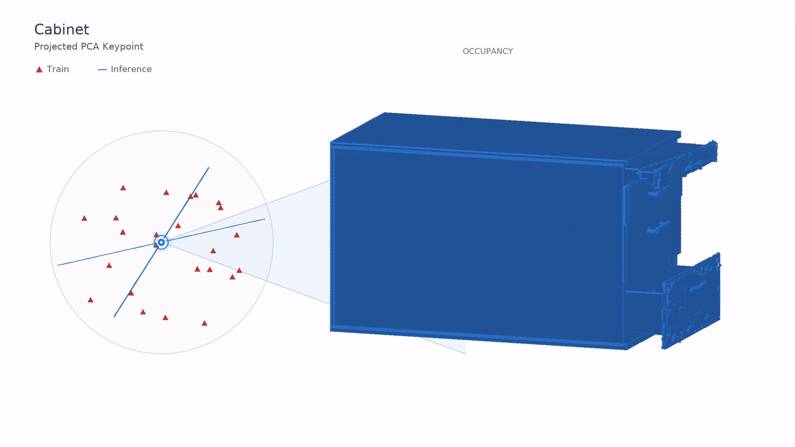

AWR across object families.
AWR represents articulated mechanisms, skinned characters, and soft objects. Each family has its own shared model. Geometry follows changes in object state.

AWR represents articulated mechanisms, skinned characters, and soft objects. Each family has its own shared model. Geometry follows changes in object state.
